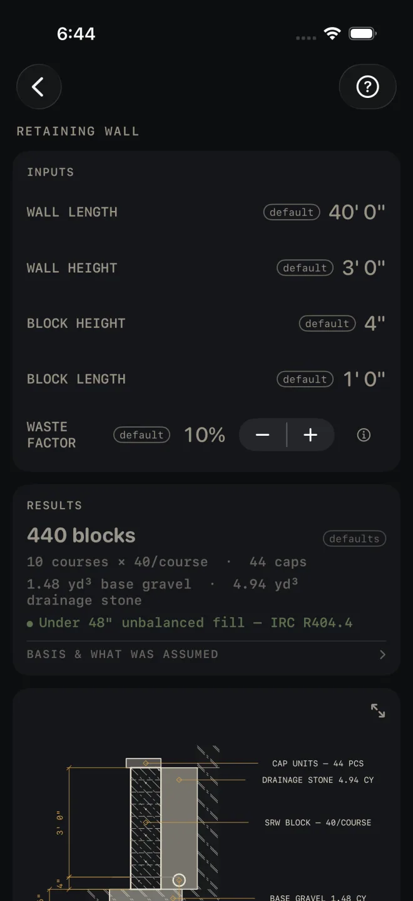

Retaining Wall
What it's for
Takes off a segmental block retaining wall: the dry-stacked landscape block that sits on a gravel pad. You get blocks, courses, caps, base gravel, drainage stone and drain pipe, with a section drawing of the wall. It makes one code check: it tells you when the wall is tall enough that the IRC line on the screen calls for an engineer. It does not design the wall.
Step by step
The example is the screen as it opens: a wall 40' 0" long and 3' 0" high, in block 4" high and 1' 0" long, with 10% waste.

1 2 3 4 5- Enter WALL LENGTH along the face of the wall. Follow the curve if it has one.
- Enter WALL HEIGHT: the exposed face, from finished grade at the toe to the top of the top block, not counting the cap. Do not add the buried part. The calculator adds one buried course for you.
- Enter BLOCK HEIGHT and BLOCK LENGTH of the unit you are buying, measured on its face. Use the real size, not the catalog name.
- Set WASTE FACTOR. It is applied to the blocks and the caps. The gravel, stone and pipe carry no waste.
- Read RESULTS. On the defaults: 440 blocks, 10 courses × 40/course · 44 caps, 1.48 yd³ base gravel · 4.94 yd³ drainage stone, and a green Under 48" unbalanced fill — IRC R404.4. Then tap BASIS & WHAT WAS ASSUMED.
Reading the results
 11
12
13
11
12
13
- The headline is blocks to buy, waste included. The line under it shows where it came from: courses times blocks per course. The course count includes the buried course, so the default 3' 0" wall in 4" block is 10 courses, not 9.
- Caps are one course of cap units along the length, waste included.
- Base gravel and drainage stone are in cubic yards. The material list gives the section each was figured on. On the shot: base gravel 6" deep × 24" wide, drainage stone 12" behind wall + drain pipe. The stone runs the full built height, buried course included.
- The check. Green reads Under 48" unbalanced fill — IRC R404.4. ENGINEER REQUIRED — OVER 48" UNBALANCED FILL (IRC R404.4) shows when WALL HEIGHT is over that. The quantities still figure, but the wall needs an engineered design. Lower the wall, step it into two terraces, or take it to an engineer.
- BASIS & WHAT WAS ASSUMED opens to the height rule — the height you enter is the exposed face, and the drawing dimensions the stack as built, rounded to full courses plus the burial — then IRC 2021 — verify local code and the note on local amendments.
- The drawing is a section through the wall: cap, block, the gravel pad, the stone column and the drain pipe. Pinch to zoom, drag to pan, double-tap to reset, and use the expand button for full screen. See Drawings.
- The buried course is dimensioned on the drawing below the grade line, under the exposed height. If your height is not a whole number of courses, the height on the drawing is the rounded-up stack, not the number you typed.
- MATERIALS. The block row says it includes one buried course and tells you to check the embedment against the manufacturer's spec. When the wall is over 3' 0" the drain pipe row adds that walls of that height often need geogrid, and to check the manufacturer's chart. Geogrid is not counted.
Retaining Wall is a Pro calculator. SHARE PDF and SAVE are
Pro as well, a one-time purchase. SHARE PDF and the list button beside it stay grey until you have entered your own
measurements. SAVE stays lit, but until then a tap only answers Enter your job's numbers first
and saves nothing.
Common mistakes
- Adding the buried course into WALL HEIGHT. It gets counted twice. Enter the exposed face only.
- Using this for a mortared block or poured wall. The takeoff is for segmental block on a gravel pad. Use Masonry or Concrete for those.
- Entering the block's depth, front to back, as BLOCK LENGTH. Length is along the face of the wall. It sets the blocks per course.
- Treating a green check as a design. It compares one height with one line of the code. Soil, surcharge from a driveway or slope above, and geogrid are outside it.
Related
- Excavation — the trench and the spoil
- Grade / Slope — the grade above and below the wall
- Masonry — mortared block, brick and stone
- Drawings
- Cut sheets and templates — what SHARE PDF sends
- Saving and history